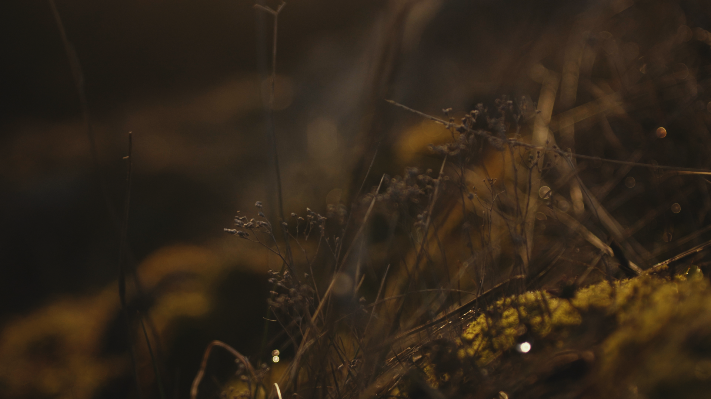
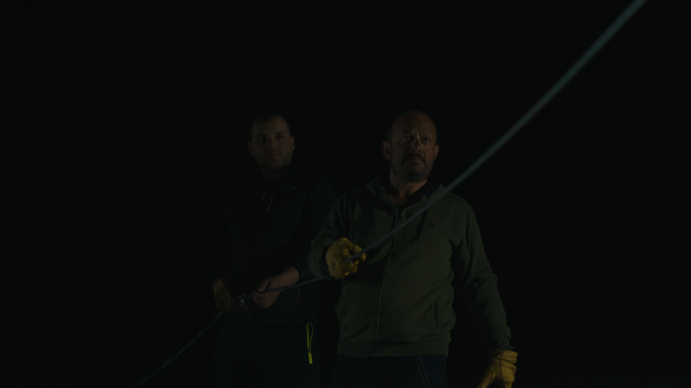
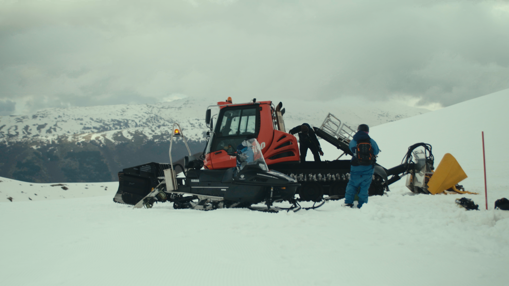

DIETRO LA MONTAGNA
DIRECTOR AND CINEMATOGRAPHER
C'è una montagna che gli sciatori non vedono mai: quella delle ore notturne, del freddo e del lavoro silenzioso. È qui che si muove Alex, che per tutto l'inverno, a bordo del suo gatto delle nevi, prepara le piste e custodisce il paesaggio.